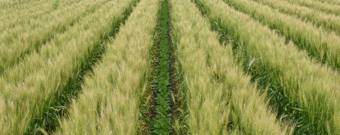
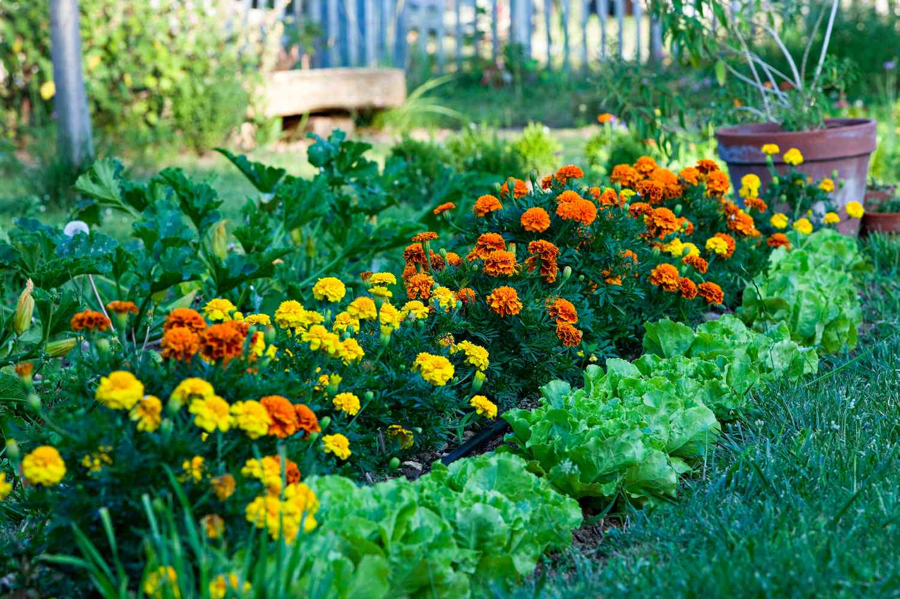
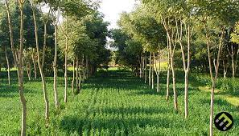
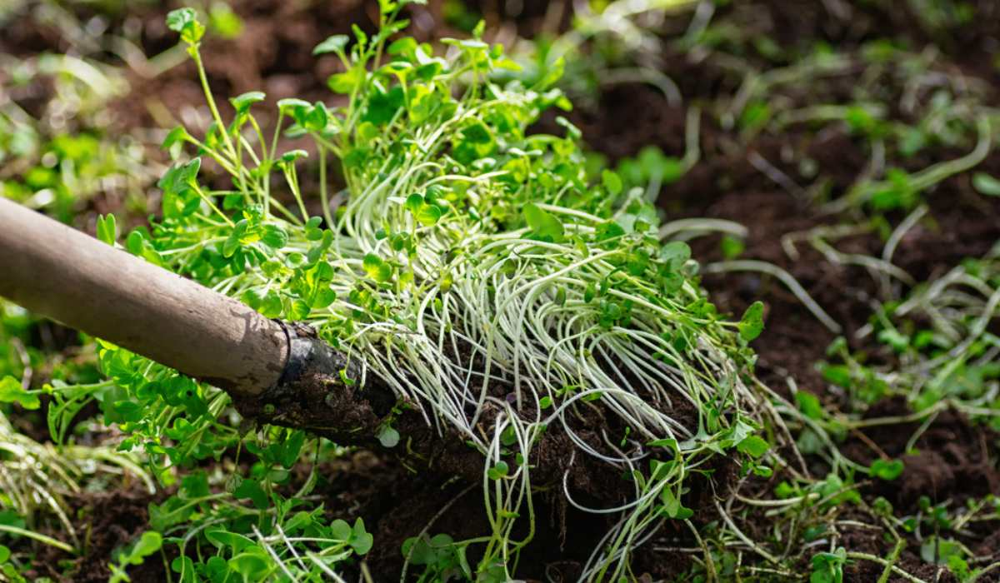

1. Crop Rotation

Crop rotation is an ancient agricultural technique where farmers grow different types of crops in the same field across multiple seasons. This method helps maintain soil fertility, prevents soil depletion, and reduces pest and disease buildup. By rotating crops, farmers avoid exhausting specific nutrients from the soil. For example, legumes like beans and peas fix nitrogen into the soil, while cereal crops like wheat or corn absorb it. This natural cycle reduces the need for chemical fertilizers. Crop rotation also helps control pests and diseases because different plants attract different insects and pathogens. Additionally, rotating deep-rooted and shallow-rooted plants improves soil structure and prevents erosion. This method is widely practiced across the world and remains an effective strategy for sustainable farming.
2. Intercropping
Intercropping is the practice of growing two or more crops together in the same field to maximize productivity and land efficiency. This technique benefits farmers by improving soil health, suppressing weeds, and enhancing crop yields. For instance, planting maize with legumes ensures that nitrogen levels remain balanced in the soil. Additionally, intercropping helps in natural pest control, as some plants act as repellents for pests that would otherwise attack a single-crop field. Farmers often use different intercropping patterns like row intercropping, mixed intercropping, and strip intercropping. This traditional practice has been used for centuries in regions with limited land availability, ensuring both biodiversity and sustainability in agriculture.
3. Companion Planting
Intercropping is the practice of growing two or more crops together in the same field to maximize productivity and land efficiency. This technique benefits farmers by improving soil health, suppressing weeds, and enhancing crop yields. For instance, planting maize with legumes ensures that nitrogen levels remain balanced in the soil. Additionally, intercropping helps in natural pest control, as some plants act as repellents for pests that would otherwise attack a single-crop field. Farmers often use different intercropping patterns like row intercropping, mixed intercropping, and strip intercropping. This traditional practice has been used for centuries in regions with limited land availability, ensuring both biodiversity and sustainability in agriculture.
4. Agroforestry
Agroforestry is a sustainable farming system that integrates trees, shrubs, and crops on the same land. This practice enhances biodiversity, improves soil fertility, and provides shade and wind protection for crops. Trees in agroforestry systems help prevent soil erosion, increase water retention, and even improve carbon sequestration. Additionally, farmers can harvest fruits, nuts, and timber from the trees while continuing to grow their regular crops. Traditional agroforestry techniques have been practiced in Africa, Asia, and Latin America for centuries. This method not only improves crop yield but also enhances environmental sustainability by maintaining ecological balance.
5. Green Manuring
Green manuring is a traditional agricultural practice where specific plants, such as legumes, mustard, or clover, are grown and then plowed into the soil to improve fertility. These plants decompose, adding organic matter, nitrogen, and essential nutrients back into the soil. The process enhances soil structure, increases microbial activity, and improves moisture retention, making it highly beneficial for sustainable farming. One of the major benefits of green manuring is nitrogen fixation. Leguminous plants, such as beans and clover, have symbiotic relationships with nitrogen-fixing bacteria, which enrich the soil with nitrogen. This reduces the need for chemical fertilizers, making farming more cost-effective and environmentally friendly. Additionally, green manuring prevents soil erosion by maintaining ground cover, suppressing weeds, and improving water retention. Green manure crops can be grown as a main crop, an intercrop, or during fallow periods when the land is not being used. When turned into the soil, they enhance its organic content, leading to better aeration and drainage. This method has been practiced for centuries, especially in Asia and Europe, to maintain soil health. Today, green manuring is widely promoted in organic farming due to its eco-friendly and sustainable nature.
6. Terracing
Terracing is an ancient agricultural practice used to cultivate crops on hilly or mountainous terrains. It involves creating flat steps or terraces on slopes to reduce water runoff and soil erosion, allowing farmers to utilize land that would otherwise be unsuitable for farming. This technique has been extensively used in regions such as the Andes, the Himalayas, and Southeast Asia, particularly in rice farming. One of the main benefits of terracing is water conservation. Since water runoff is slowed down by the terraces, more water is absorbed into the soil, reducing drought stress on crops. Additionally, terracing prevents soil erosion by stabilizing the land and preventing nutrient loss. This results in higher productivity and long-term soil fertility. There are different types of terraces, such as bench terraces, contour terraces, and step terraces, each suited to different landscapes. Farmers often reinforce terraces with grass or stone walls to maintain their structure. Although terracing requires significant labor and investment initially, it provides long-term benefits by making sloped lands arable and preventing land degradation. Even today, it remains a crucial practice for sustainable farming in hilly areas, ensuring food security and environmental conservation.